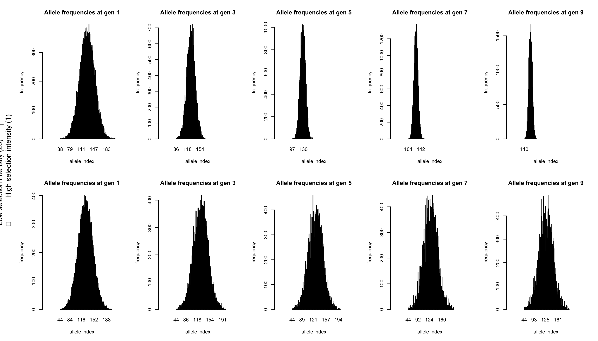

Selection
3 Selection
Some first notes
This chapter assumes that you have completed the first two tutorials: Demographics and Neutral markers.
In this section we will look at the basics of selection in quantiNEMO. Selection can only act on phenotypic traits, this chapter will therefore also introduce quantitative traits. We will start with examples from single loci.
3.1 The basic selection process
How does selection work in qN? The genetic architecture of a non-neutral (i.e. selected) quantitative trait is very similar to that of the neutral genetics.
quanti_loci 1
quanti_all 255
quanti_ini_allele_model 0
These parameters should be very familiar, except that each parameter is preceded by quanti_ instead of ntrl_. The big difference between a neutral locus and a locus under selection, is that the former has no effects on the fitness of an individual, whereas the latter influences an individual’s phenotype and thereby its fitness. Each allele of a quantitative locus has an effect on the phenotypic trait that locus codes for.
A trait in qN is coded as a plain value, say ‘5’ or ‘23.4’. An allelic effect is a simple addition of a value to this trait, with each allele having a different value (positive or negative). So if the initial trait value was ‘5’ and your individual has allele ‘-0.4’ and ‘1.2’, the trait value will be 5-0.4+1.2=5.8, a case of simple additive genetics.
Our phenotypic trait can be whatever we want it to be: number of petals, tail length, required humidity, redness of the fur etc. etc. However, as already said, the phenotypic value in the simulations is centred around zero, meaning that at the beginning of each simulation a population has an average phenotype of zero. But this zero should not be seen as having no petals, no tail, completely arid or a white fur. Instead, since everything in qN is relative, this zero should represent the current average of your population.
The phenotypic value, as determined by the alleles, therefore represents the deviation of this population average. An example: the average snout length of a certain species of shield bug is 0.61mm. In this simulation a certain individual has two alleles: + 0.02 and +0.004. Its within-simulation phenotypic value is therefore 0.024, but translated to ‘real life’ this would correspond to a snout of 0.634mm.
As you just saw in the previous example, individuals are diploid in qN. Moreover, by default, alleles have a purely additive effect (though dominance can be implemented; section 8.1.2
You may specifically set the effect of each allele yourself in a file similar to what we used in section 2.2 and specified with quanti_allelic_file (see section 8.1.1 “Allelic effects” in the manual quanti_allelic_var 4
This parameter represents the variance of a normal distribution around a mean of 0, defining a distribution from which allelic effects are drawn. So even though all 255 alleles will have another effect, more effects will be relatively small and only a few alleles will have large effects. Because the distribution is around zero, we also know that around 50% of our alleles will have a positive effect, and 50% a negative effect on our trait. Here we chose a variance of 4 which translates into a standard deviation of \(\sqrt4=2\), which in turn means that 68% of our alleles will have an effect on the phenotype of something between -2 and +2. Of course, these values only mean something relative to the strength of selection and the influence of the environment (more on those later).
Question: With quanti_allelic_var, you define an allele frequency distribution. Draw this distribution with annotated axes for our current simulation. Assuming random mating in Hardy-Weinberg equilibrium, how would the phenotypic trait frequency distribution look?
So now that we have our trait architecture, how is selection going to act on it? In qN, selection acts by default on the reproductive stage, meaning that the number of offspring you produce, depends on your fitness. (This works fine for most simulations, but if you need to, you can change it using selection_position, see chapter 7 ‘Selection’ of the manual.
quanti_selection_model 1 # 1 = stabilising selection;
quanti_stab_sel_optima 0 # the optimal phenotype (default 0)
NB. Several other selection models exists in qN, like directional selection, fitness landscapes or (the default) no selection, see section 8.5 ‘Selection models’
Stabilising selection requires an ‘optimal phenotype’. For our current simulation, we will set the optimal phenotype to the initial average phenotype of the population, being zero. The more an individual’s phenotypic value approaches this ‘optimal phenotype’, the more offspring it will produce. Conversely, the more an individual’s phenotype deviates from this optimum, the less successful it will be.
How much less successful it will be, is determined by the strength of selection. Does 1 unit deviation from the optimum mean no offspring at all, or just 10% less than the optimal phenotype? This is determined by patch_stab_sel_intensity. Though the parameter is called ‘stabilising selection intensity’, it is better thought of as ‘stabilising selection leniency’: the higher the value, the more lenient (and thus the less intense) selection acts. Together, quanti_stab_sel_optima and quanti_stab_sel_intensity define the bell-shaped curve that determines the relationship between phenotype and fitness:
(in this figure, the optimal phenotype \(Z_{opt} = 0\) and the selection intensity \(\omega = 2\))
You can see that the larger the selection intensity gets, the wider the curve and therefore a wider range of phenotypes will have a high fitness. But how wide the range of initial phenotypes is, was determined by quanti_allelic_var. It is therefore these three parameters, quanti_stab_sel_optima, quanti_stab_sel_intensity and quanti_allelic_var that determine the simulation’s process of ‘natural’ selection. The relation between these three values (and the initial average phenotype of 0) give ‘meaning’ to the values used in your simulation and should be carefully considered whenever you want to reconstruct a natural system. In our current exercise we will demonstrate the effect of patch_stab_sel_intensity on selection and therefore choose two different values:
patch_stab_sel_intensity 1 20
To observe and analyse the behaviour of our alleles, we will use a similar approach as in tutorial 2.1. However, because we now work with quantitative traits (as opposed to the neutral traits in the previous tutorial), we would also be interested in the mean genotypic value of the population (q.meanG_p) and of each individual (quanti_save_geno_value). instead of just saving the genotype of each individual, we will also save the genotypic value of each individual. Because our current simulation does not allow any influence of the environment on the phenotype, the genotypic and phenotypic value will be the same.
stat {q.adlt.nbAll q.adlt.ho q.meanG_p}
quanti_save_genotype 1
quanti_save_geno_value 1
Because process of selection is expected to go much faster than the process of mutation, we will save the genotype each generation (which is default) and run our simulation for only ten generations, but with 10’000 individuals.
generations 10 patch_capacity 10000
Combine all the code in a single file and run the simulation. Because we entered two values for the selection intensity, we created a batch file with two simulations: one where the patch_stab_sel_intensity 5 and on where patch_stab_sel_intensity 20. qN should produce files for each of those settings. Besides the log, legend, mean, stat and var-files, and the .dat-files of each generation containing the genotypes, you will now also find .gen-files in the output folder. These files are very similar to the .dat-files, except that they contain the genotypic trait value for each individual instead of their genotype. However, we will start our analysis through a big lens by looking at the general statistics. Read the xxx_stats.txt file for each simulation and plot the number of alleles, the heterozygosity and the mean genotypic value over time.
# a) high selection intensity (low omega)
omegaA<-1
stat_A<-read.table(myfileA<-"selection/intensity1_stats.txt",h=T)
# b) low selection intenstiy (high omega)
omegaB<-20
stat_B<-read.table(myfileB<-"selection/intensity20_stats.txt",h=T)
# Plotting number of alleles and heterozygosity over time
par(mfrow=c(2,3))
plot(stat_A$generation, stat_A$q.adlt.nbAll, type='l',
xlab="generation", ylab="nb. of alleles", ylim=c(0,160),
main=paste("High selection intensity (",omegaA,")",sep=""))
plot(stat_A$generation, stat_A$q.adlt.ho, type="l",
xlab="generation", ylab="observed heterozygosity",
ylim=c(0.9,1), main=paste("High selection intensity (",omegaA,")",
sep=""))
plot(stat_A$generation, stat_A$q.meanG, type="l", xlab="generation",
ylab="mean genotypic value", ylim=c(-0.5,0.5),
main=paste("High selection intensity (",omegaA,")",sep=""))
plot(stat_B$generation, stat_B$q.adlt.nbAll, type='l',
xlab="generation", ylab="nb. of alleles", ylim=c(0,160),
main=paste("Low selection intensity (",omegaB,")",sep=""))
plot(stat_B$generation, stat_B$q.adlt.ho, type="l",
xlab="generation", ylab="observed heterozygosity",
ylim=c(0.9,1), main=paste("Low selection intensity (",omegaB,")",
sep=""))
plot(stat_B$generation, stat_B$q.meanG, type="l",
xlab="generation", ylab="mean genotypic value", ylim=c(-0.5,0.5),
main=paste("Low selection intensity (",omegaB,")",sep=""))The top row shows the results where selection intensity = 1 and the bottom row where selection intensity = 20. The effect of stronger selection is seen in the loss of alleles during the ten generations, which is faster if selection is stronger. The drop in heterozygosity is only minimal. The mean genotypic value does not change in either simulation, since both the strong and weak selection select for a phenotype of 0. As both simulations already started at this value, we would not expect the population average to change.
But within the population the distribution of genotypic values among individuals is expected to change under the influence of selection. We can visualise this using the genotypic value files (those named xxx.gen). For each generation, we plot the genotypic values as a histogram. Below we plotted the odd generations only.
# Retrieving the file paths
prefileA<-substr(myfileA,1,nchar(myfileA)-10)
prefileB<-substr(myfileB,1,nchar(myfileB)-10)
nb.gen<-length(stat_A$generation) # number of generations
gen.dig<-nchar(nb.gen)
nb.al<-stat_A$q.adlt.nbAll[1] # number of alleles
al.length<-nchar(255) # number of digits of each allele
# Creating matrices to store all the allele
# and trait data in per generation
traitsA<-matrix(ncol=nb.gen, nrow=10000)
traitsB<-matrix(ncol=nb.gen, nrow=10000)
allelesA<-matrix(ncol=nb.gen, nrow=10000*2)
allelesB<-matrix(ncol=nb.gen, nrow=10000*2)
# Reading the genotype and genotypic value files
for(gen in 1:nb.gen){
# genotypic value files
tabA<-read.table(paste(prefileA,"_g",
formatC(gen,width=gen.dig,flag=0),
".gen", sep=""),
h=F, skip=2)
traitsA[,gen]<-tabA[,2]
tabB<-read.table(paste(prefileB,"_g",
formatC(gen,width=gen.dig,flag=0),
".gen", sep=""),
h=F, skip=2)
traitsB[,gen]<-tabB[,2]
# genotype files
tabA<-read.table(paste(prefileA,"_g",
formatC(gen,width=gen.dig,flag=0),
".dat", sep=""),
h=F, skip=2, colClasses="character")
allelesA[,gen]<-as.numeric(c(substr(tabA[,2],1,al.length),
substr(tabA[,2],al.length+1,al.length*2)))
tabB<-read.table(paste(prefileB,"_g",
formatC(gen,width=gen.dig,flag=0),
".dat", sep=""),
h=F, skip=2, colClasses="character")
allelesB[,gen]<-as.numeric(c(substr(tabB[,2],1,al.length),
substr(tabB[,2],al.length+1,al.length*2)))
}
# Plotting the genotypic trait frequency data
par(mfcol=c(2,nb.gen/2), cex=0.7, oma=c(0,3,0,0))
odd.generations<-1:(nb.gen/2)*2-1
for(gen in odd.generations) {
hist(traitsA[,gen], xlim=c(-25,25), breaks=10,
xlab="trait value", main=paste("generation",gen))
hist(traitsB[,gen], xlim=c(-25,25), breaks=10,
xlab="trait value", main=paste("generation",gen))
}
mtext(paste("Low selection intensity (",omegaB,") |
High selection intensity (",omegaA,")",sep=""),side=2,
line=1,outer=TRUE)The effect of a stronger selection manifests itself clearly by the strong narrowing of the trait distribution in the upper graphs. In contrast, the lower graphs (with weak selection), give the impression that no selection at all is happening. However, even as selection acts on the genotype, what gets passed on to the next generation are the alleles. And in both scenarios a change in allele frequencies can be seen when we plot all allele frequencies per generation.
# Plotting the genotype frequency data
par(mfcol=c(2,nb.gen/2), cex=0.7, oma=c(0,3,0,0))
odd.generations<-1:(nb.gen/2)*2-1
for(gen in odd.generations) {
barplot(table(allelesA[,gen]),
main=paste("Allele frequencies at gen",gen),
ylab="frequency", xlab="allele index",xlim = c(-50,200))
barplot(table(allelesB[,gen]),
main=paste("Allele frequencies at gen",gen),
ylab="frequency", xlab="allele index",xlim = c(-50,200))
}
mtext(paste("Low selection intensity (",omegaB,") |
High selection intensity (",omegaA,")",sep=""),
side=2,line=1,outer=TRUE)
These plots are the same as those from tutorial 2.1, just with more alleles. Each plot shows the frequency (y-axis) of each of the 255 alleles (x-axis, ordered from 1 to 255; note that, as alleles disappear during the simulation, they also disappear from the plot). The left most graphs show the identical starting situations for each simulation with each allele having a similar frequency (both within and between simulations). Each individual has two alleles which added effects form the phenotype of the individual. In qN by default selection does not act on survival chances, but on reproduction. So those individuals with the better trait values more often passed on their alleles. When selection pressure is high, the effect of this is already clearly visible at generation 3 (top graph). However, also with low selection intensity, the signs of selection are obvious at generation 9, in contrast with at the level of the genotypic trait.
Question: How will the allele frequency graph and the trait distribution look for the two scenarios after millions of generations? Which natural processes are currently left out of the simulations which could prevent this from happening?
Question: The allele frequency graph forms a nice curve with a peak in the middle (around allele 130). What does this tell us about how qN assigns effects to each allele? (Hint, you can rerun your analysis with quanti_output 1 and look at the produced allelic_values.txt file.)
3.2 The selection-mutation-drift equilibrium
If you would have run the simulation from the previous section long enough, only one or two alleles would have been left; selection would have selected the best allele to remain if drift had not earlier perchance already got rid of all diversity. However, our simulation did not include any sources of new genetic material. Mutation should set the system in a selection-mutation-drift equilibrium with non-zero diversity. We will demonstrate this precarious selection-mutation-drift balance in this short, second section on selection. Moreover, we will inspect how much of the equilibrium diversity is owing to selection, and how much can be assigned to drift solely.
As a starting point of this simulation, we will use the same setup file as in the section above and make some adaptations to suit our needs. For example, we introduce mutation in our model with a slightly high rate of 10-4.
quanti_mutation_rate 1e-4
We will use the default mutation model, the Random Mutation Model, meaning that when a allele mutate, it has a higer change to mutate to an allele with an allelic value close to a reference value. This simulate a system where the value of an allele after a mutation is given by \(a_{\text{new}} = a_{\text{mut}}\), where \(a_{\text{mut}}\) would be randomly selected in a gaussian with mean 0. Since it is default, we do not need to mention it in our setup file, but it is always important to be conscious of all the default parameters that are running during your simulation when interpreting your results! We will keep the same model of selection (stabilizing selection), but add the no-selection model, in order to test the effects of selection on the equilibrium.
quanti_selection_model 1 0
The intensity of selection will this time not be a sequential parameter but instead a single value. Here we will set a selection intensity of 10. This makes the selection curve wider than that of the allelic effects distribution (which still has a stdev. of 2); selection should therefore be relatively lenient.
patch_stab_sel_intensity 10
Lastly again our output values. We will measure our genetic diversity by the number of alleles and heterozygosity levels. However, these measures only tell us something about the allelic diversity. For selection it is also important to know what these alleles ‘do’, i.e. how these alleles add up to become a phenotypic trait on which selection can act. Since in our current scenario, phenotype and genotype are still the same (no environmental influence), we should therefore get a measure of genotypic diversity. We could again have genotypic value files produced, but the simplest method would be to use the measure of genotypic variation. Each individual has, thanks to its two alleles, a genotypic trait value. qN can give the average genotypic value of the population with q.meanG_p and provide the variation around this mean with q.varG_p. It is this variation that tells us how different the phenotypes still are within a population and may teach us a lot about the evolutionary ‘potential’ of a population, i.e. how easy it could adapt to changing conditions. Because we want this output only every hundredth generation (and the first one) our output parameters will look like this:
stat {q.adlt.nbAll q.adlt.hs q.meanG_p q.varG_p}
stat_log_time (1 1, 2 100)
With selection, mutation and drift, we have a lot of chance processes working at the same time. To filter out random noise, we will use a large population, for many generations and most importantly, with various replicates.
patch_capacity 10000
generations 5000
replicates 10
This will be our complete setup file. Safe your file with these commands and run it.
This simulation will take quite a while, since we have to perform 10 simulations for each of our two scenarios (selection, no selection). In the meantime, we can think about how to visualise our results. We are interested in overall trends, so we should plot the result averages from the xxx_mean.txt file. However, we can only know if this is regular behaviour of the simulation once we see the spread of all simulations around it. We should therefore also use the variances of the simulation results from the xxx_var.txt file. However, rather than directly plotting the variance data, it would make more sense to instead take the square root of those values, transforming them in the more intuitive standard deviations (stdev) and plotting these around the mean across simulations (so for each setup file, we would plot three lines per statistic: the mean across replicates, the mean + 1 stdev. , the mean - 1 stdev.). Below we have done just that:
# Read the files into R
# Select the xxx_mean.txt file from the simulation with selection (the corresponding variance file will be automatically read as well)
sel.mean<-read.table( spath<-"selection/mutation_with_selection_mean.txt",h=T); sel.var<-read.table(paste(substr(spath,1,nchar(spath)-9),"_var.txt",sep=""),h=T)
# Select the xxx_mean.txt file from the simulation withOUT selection (the corresponding variance file will be automatically read as well)
drft.mean<-read.table( dpath<-"selection/mutation_without_selection_mean.txt",h=T); drft.var<-read.table(paste(substr(dpath,1,nchar(dpath)-9),"_var.txt",sep=""),h=T)
### Allelic variance
par(mfrow=c(1,4))
plot(sel.mean$q.adlt.nbAll ~ sel.mean$generation, type="l", ylim=c(0,150),lwd=2, main="Nb. of alleles", xlab="generations", ylab="nb. of alleles")
lines(sel.mean$q.adlt.nbAll+sqrt(sel.var$q.adlt.nbAll) ~ sel.mean$generation, col="grey")
lines(sel.mean$q.adlt.nbAll-sqrt(sel.var$q.adlt.nbAll)~ sel.mean$generation, col="grey")
lines(drft.mean$q.adlt.nbAll ~ drft.mean$generation, type="l", ylim=c(0,150),col="firebrick", lwd=2)
lines(drft.mean$q.adlt.nbAll+sqrt(drft.var$q.adlt.nbAll)~ drft.mean$generation, col="firebrick4")
lines(drft.mean$q.adlt.nbAll-sqrt(drft.var$q.adlt.nbAll)~ drft.mean$generation, col="firebrick4")
legend("topright", c("stabilising selection", "ss +- 1 stdev.", "no selection", "ns +- 1 stdev"),lty=c(1,1,1,1), lwd=c(2,1,2,1),col=c("black","grey","firebrick","firebrick4"))
### Genetic diversity (expected heterozygosity)
plot(sel.mean$q.adlt.hs ~ sel.mean$generation, type="l", ylim=c(0.5,1),lwd=2, main="Genetic diversity", xlab="generations", ylab="expected heterozygosity")
lines(sel.mean$q.adlt.hs+sqrt(sel.var$q.adlt.hs) ~ sel.mean$generation, col="grey")
lines(sel.mean$q.adlt.hs-sqrt(sel.var$q.adlt.hs)~ sel.mean$generation, col="grey")
lines(drft.mean$q.adlt.hs ~ drft.mean$generation, type="l", ylim=c(0.5,1),col="firebrick", lwd=2)
lines(drft.mean$q.adlt.hs+sqrt(drft.var$q.adlt.hs)~ drft.mean$generation, col="firebrick4")
lines(drft.mean$q.adlt.hs-sqrt(drft.var$q.adlt.hs)~ drft.mean$generation, col="firebrick4")
## Genotypic mean
plot(sel.mean$q.meanG ~ sel.mean$generation, type="l", ylim=c(-2,2),lwd=2, col="black", main="Genotypic mean", xlab="generations", ylab="mean genotypic value")
lines(sel.mean$q.meanG+sqrt(sel.var$q.meanG)~ sel.mean$generation, col="grey")
lines(sel.mean$q.meanG-sqrt(sel.var$q.meanG)~ sel.mean$generation, col="grey")
lines(drft.mean$q.meanG ~ drft.mean$generation, type="l", ylim=c(-2,2),lwd=2, col="firebrick")
lines(drft.mean$q.meanG+sqrt(drft.var$q.meanG) ~ drft.mean$generation, col="firebrick4")
lines(drft.mean$q.meanG-sqrt(drft.var$q.meanG)~ drft.mean$generation, col="firebrick4")
### Genotypic variance
plot(sel.mean$q.varG ~ sel.mean$generation, type="l", ylim=c(0,20),lwd=2, main="Genotypic variance", xlab="generations", ylab="genotypic variance")
lines(sel.mean$q.varG+sqrt(sel.var$q.varG)~ sel.mean$generation, col="grey")
lines(sel.mean$q.varG-sqrt(sel.var$q.varG)~ sel.mean$generation, col="grey")
lines(drft.mean$q.varG ~ drft.mean$generation, type="l", ylim=c(0,20),lwd=2, col="firebrick")
lines(drft.mean$q.varG+sqrt(drft.var$q.varG) ~ drft.mean$generation, col="firebrick4")
lines(drft.mean$q.varG-sqrt(drft.var$q.varG)~ drft.mean$generation, col="firebrick4")
The black curve constantly represents the value in the stabilising selection scenario, the red curve the no-selection scenario, averaged over the ten replicates. Both curves are surrounded by two thinner curves in the same colour, representing the one standard deviation range around the mean.
At the start of our simulation, all alleles were present in the population. However, both curves in the most left graph demonstrate that most alleles get lost very quickly. The red curve flattens out only slightly above that of the black curve, indicating that most alleles are not even lost due to selection, but just due to drift. Moreover, the ranges around these curves are narrow, which means that each independent simulation had more-or-less the same number of alleles throughout its runtime.
Even though the number of alleles stabilizes quite quickly in the scenario of stabilising selection, its genetic diversity keeps on decreasing (and at a faster rate than in case of drift).
Question: how can we reconcile these seemingly contradictory observations?
Our first two statistics had relatively narrow ranges, which did not overlap and were similar in size for the two scenarios. By contrast, when we’re looking at the average genotypic value, we see that the drift scenario has a huge range, completely overlapping that of the selection scenario. This indicates that the genotypic value averaged across individuals within a simulation differed wildly between simulations with no selection. By contrast, the range of the averages of the genotypic value with selection is hardly visible, indicating that all these simulations had almost identical genotypic means.
Question: Explain this difference between the selection and no-selection scenario.
Our last graph show the genotypic variance, telling us how phenotypically different individuals still were within a population. Clearly, in presence of selection virtually no variance exists in a population, whereas without selection there is a lot of variance (albeit slowly decreasing). Note that this variance is not the same as the stdev2 from the previous graph! The variance shown in the ‘Genotypic mean’ graph (the range of the thin lines), is the variance of the mean of the population average genotypic value. The right most graph shows the mean of the variance of the genotypic value. The ‘Genotypic variance’ graph therefore shows the variance of the genotypic value within a population (i.e. how different individuals within a single population were) averaged over the ten replicate simulations, whereas the ‘Genotypic mean’ graph shows the genotypic value within the population (i.e. what the average individual’s genotype looked like).
Question: What is the difference between the following two ranges?
1. q.meanG [from the xxx_mean.txt file] \(\pm\) q.meanG [from xxx_var.txt] (as visualised in the third plot above);
2. q.meanG [from xxx_mean.txt] \(\pm\) q.varG [from xxx_mean.txt]?
By default a simulation starts with full allelic diversity (quanti_ini_allele_model 0), but such high diversity can be considered artificial. However, we have seen in this section that even though you may start with full diversity, selection and drift will quickly reduce this to a more ‘natural’ state of mutation-selection-drift equilibrium. When running a simulation it is therefore advisable to start with a so called ‘burn-in’ period until an initial equilibrium has been reached, only after do you start the actual scenario of interest. You can do this by using temporal parameters. Using these for your simulations, your data does not get ‘polluted’ with artefacts resulting purely from the simulation initialisation.
Question: This section we always started the simulations maximally polymorphic. Do the simulations result in similar equilibria if the population would have started monomorphic (quanti_ini_allele_model 1)? Test this.
Up until now, we have used ‘phenotype’ and ‘genotype’ interchangeably in this section. This because to qN they have been exactly the same. However, we may allow qN to randomly modify our genotypic traits, simulating the effect of the external environment on the development of a trait, resulting in individuals which might have the same genotype, but different phenotypic traits. The extra variance this adds between traits (the environmental variance) can be set directly by:
quanti_environmental_model 0 # default: you can set the environmental variance directly quanti_heritability 1 # an environmental variance of 1; default 0
If you know the heritability of your trait, you may define the broad or narrow-sense heritability in qN instead the environmental variance directly (see section 8.1.5 Environment of the manual
Question: How would including environmental variance change the stabilizing selection process of the scenario above? Rewrite your setup file: remove the no-selection scenario and include an environmental variance of 0 or 1 (use a sequential parameter). Recreate the above plots with one line corresponding to the scenario with environmental variance and the other line to the scenario without environmental variance. Additionally make two new plots: one of the phenotypic mean and one of the phenotypic variance (do not forget to add them to your output statistics!).
3.3 Mendelian mice
Mammalian fur colour is a famous example of epistatis. The three pelt colours are dependent on two loci: B/b determines whether the colouring will be black (B, dominant) or brown (b, recessive); C/c determines whether any colour will actually be deposited in the fur (C, dominant) or not, resulting in a white mouse (c, recessive).
As a last exercise will consist of two parts. First we will try to copy this genetic system and the crossing schedule shown above into qN, starting with as single pair of fully heterozygote mice. Do we get a similar ratio of mice colour in the offspring?
Once we have our genetic system working, we will continue with the second part of the exercise where we will test the following scenario: Suppose these mice lived on a chessboard landscape on which only the (camouflaged) black and white mice survive to breeding age (i.e. brown mice make no offspring), how long would it take for the b-allele to disappear from the population? For our exercise, let the black phenotype be represented by a phenotypic value of 1, brown by 0.5 and white by 0. First our crossing schedule: We want to make a single crossing only, so we only need two generations
generations 2
Next the genetics of the system. By how many loci is the fur colour determined? And how many alleles on each locus?
quanti_loci 2
quanti_allele 2
Next we need to determine what each allele ‘does’. In previous examples, we always let qN just randomly assign allelic values to each allele. However, we now only have two alleles at each locus, and we actually know what we want these to do (they have to produce black (1), brown (0.5) and white (0) individuals). So instead of using quanti_allelic_var, we will this time specify the allelic effects ourselves in a separate file similar to how we specified initial frequencies in tutorial 2.2
quanti_allelic_file “fur_alleles.txt”
Open a new file in your text editor and save this under the name “fur_alleles.txt”. The FILE_INFO section you will be able to produce yourself (see section 8.1.1 ‘Allelic effects’
The second part of the file is a bit trickier: what effects do each of our alleles have? We know that the genotype BB produces the phenotype ‘black’ which is represented by the phenotypic value 1. So BB=1, which means B=0.5. Similarly bb=‘brown’=0.5 gives b=0.25. What about the second locus? We know that when a mouse is ‘CC’, nothing happens, or, the mouse gets the colour as determined by the first locus. In qN the phenotypic trait value of an individual is the sum of the genotypic trait values of each of its loci. The total phenotypic value of a BB CC individual (which has phenotype ‘black’) should still be 1. So if BB + CC = 1 and we know that BB = 1, it follows that CC = 0 which gives C=0. Conversely, we know that an individual homozygous cc is white (= phenotypic value 0), independent of locus 1. So BB + cc = 0, BB=1 therefore cc= -1, which gives c= -0.5. How do we write this down in our allelic file? Let’s define B/b as locus 1 with allele B as 1 and b as 2 (so genotype Bb = 12). This makes locus C/c locus 2 with C allele 1 and c allele 2. Now we can make the table of our file, which should look like this:
[FILE_INFO]{
col_locus 1
col_allele 2
col_allelic_value 3
}
#locus allele value
1 1 0.5 # locus 1 allele 1 = B
1 2 0.25 # locus 1 allele 2 = b
2 1 0 # locus 2 allele 1 = C
2 2 -0.5 # locus 2 allele 2 = c
Of course in the current system, our genes should not be additive: Genotype ‘Bb’ does not result in a brown-blackish mouse with phenotypic value 0.75, but in a full black one. How do we implement this dominance in qN? Have a look at the dominance section of the manual. As with the allelic effects, qN could assign random dominance effects, but just as before, we want to assign the dominance effects ourselves. To do this we need to create another file.
quanti_dominance_file “fur_dominance.txt”
This file will look very similar to our allelic effects file. The top part consists again of the FILE_INFO section (see section 8.1.2 ‘Dominance effects’
[FILE_INFO]{
col_locus 1
col_allele1 2
col_allele2 3
col_dominance 4
}
#locus al1 al2 dominance
1 1 2 1
2 1 2 1
Now we need to add only one more layer of genetic interactions: the interactions between loci i.e. epistasis. Reading section 8.1.3 ‘Epistatic effects’
quanti_epistatic_file “fur_epistasis.txt”
and enter at the top the FILE_INFO section. We will only need to specify two bits of information, the genotypes, and the corresponding modification of the genotypic value, the so called epistatic effect. After specifying the file information we can go create the table below with those two columns. The left column will contain all genotypes in FSTAT format (unlike the dominance file, for epistasis all genotypes need to be specified, even if some do not have epistatic effects). In the right column you will need to specify for each genotype the modification of the genotypic value caused by epistasis (i.e. how much should be added or subtracted). In our scenario all genotypes will already give the ‘correct’ phenotypic output (i.e. 1 for black mice, 0.5 for brown mice, 0 for white mice) with the exception of one.
Question: Looking at the allelic and dominance effects, which genotype does not yet give the ‘correct’ phenotypic output? What should be the epistatic value for this genotype? Enter this value behind the corresponding genotype and add a ‘0’ behind all others.
Our genetic architecture is now complete. You may test whether it functions properly by doing a few test runs creating a lot of genetically variable individuals and comparing the genotype output with the phenotypic trait value output. Do all allele combinations produce the desired fur colour? [N.B. When writing a script it is perfectly normal -or even recommended- to test your code continuously as you write, to make sure you are on the right track! No one ever writes a functioning script in one go as we have been doing in these tutorials.] Now we need to define our starting pair of heterozygous mice. Our ‘standard’ initialisation parameters patch_ini_size and quanti_ini_allele_model are not sufficient for this task; they cannot specify the exact genotype nor the sex of our starting individuals. Instead, we can give qN another input file in which we specify each individual. This file we will name “fur_ini_geno.txt”
quanti_ini_genotypes “fur_ini_geno.txt”
This file should have the same format as a FSTAT file
1 2 2 1
loc_Bb
loc_Cc
1 12 12 2 1 0_1 0_1 0_1 2
1 12 12 2 0 0_1 0_1 0_1 2
Lastly, for our cross to work, we need the two mice to breed, so assign the proper breeding system.
mating_system 3 # promiscuity with two sexes
mating_nb_offspring_model 0 # Fill up to carrying capacity
patch_capacity 16000
Normally, mice would have about 10 pups. However, the goal of the current exercise is to reproduce the ratio of phenotypes as found in the image above. For that we would need at least 16 offspring. However, since there will always be some random noise it is better to repeat that exercise 1000 times (i.e. make them have 16000 offspring).
Now we have a setup file, four extra files defining our genetic architecture and a two mice ready to go. Make sure you ask the correct output before running the script.
# Read the phenotypic file of generation 2 into R
phenoMice<-read.table("fur/fur1_g2.phe",skip=2, header=FALSE)
# Plot the three possible phenotypes with their frequencies
my.plot<-barplot(table(phenoMice[,2]),xlab="trait value", ylab="Frequency",col=c("white","brown","black"))
text(my.plot, table(phenoMice[,2])-500, table(phenoMice[,2]), col=c("black","black","white"))Above are our results: the phenotype distribution in generation 2. We see that our two black parents produce offspring in exactly the colourful ratio we would have expected (4:3:9).
Now for the second part of our exercise: Suppose this original pair of black mice lived on a chessboard landscape on which only the (camouflaged) black and white mice survive to breeding age (i.e. brown mice make no offspring), how long would it take for the b-allele to disappear from the population?
Assume that a single female mouse can produce up to ten pups and we have room for a 1000 mice at max. How would you implement the selection against the ‘middle’ phenotype? Multiple options exist. (HINT: Either somehow use the epistasis file or create a custom selection curve.) How many generations? How many replications? What type of reproduction would you implement? Which statistics allow you to follow the process the best? Below you can see our results:
We plotted the frequency of each allele averaged across the hundred simulation plus-minus 1 standard deviation (the dotted lines in the same colour). You can see that the brown allele b (brown line drops very quickly, though in many simulations never really disappears.
Question: Why does it take so long to remove the brown allele from the population, despite the strong selection against it?
The colour depositing allele C (blue line) decreases slightly, increasing the chance of the white phenotype, but here the drop is much less significant compared to the brown-black locus.
Question: explain the difference between the two loci.
# Read the statistics means file
mean.stat<-read.table("fur/fur2_mean.txt", header=TRUE)
# Read the statistics variance file
var.stat<-read.table("fur/fur2_var.txt", header=TRUE)
par(mfrow=c(1,2))
# Plot the mean allele frequencies of locus 1: Bb
plot(mean.stat$generation ,mean.stat$q.adlt.a.freq_l1_a1, type='l', main="locus Bb", xlab="Generation", ylab= "Allele frequency", ylim=c(-0.1,1.1))
lines(mean.stat$generation ,mean.stat$q.adlt.a.freq_l1_a2, col="brown")
# +- standard deviation
lines(mean.stat$generation ,I(mean.stat$q.adlt.a.freq_l1_a1 - sqrt(var.stat$q.adlt.a.freq_l1_a1)) , col="black", lty=3)
lines(mean.stat$generation ,I(mean.stat$q.adlt.a.freq_l1_a1 + sqrt(var.stat$q.adlt.a.freq_l1_a1)) , col="black", lty=3)
lines(mean.stat$generation ,I(mean.stat$q.adlt.a.freq_l1_a2 - sqrt(var.stat$q.adlt.a.freq_l1_a2)) , col="brown", lty=3)
lines(mean.stat$generation ,I(mean.stat$q.adlt.a.freq_l1_a2 + sqrt(var.stat$q.adlt.a.freq_l1_a2)) , col="brown", lty=3)
# Plot the mean allele frequencies of locus 2: Cc
plot(mean.stat$generation ,mean.stat$q.adlt.a.freq_l2_a1, type='l', main="locus Cc", xlab="Generation", ylab= "Allele frequency", ylim=c(0,1), col="blue")
lines(mean.stat$generation ,mean.stat$q.adlt.a.freq_l2_a2, col="grey")
# Plot the standard deviation
lines(mean.stat$generation ,I(mean.stat$q.adlt.a.freq_l2_a1 - sqrt(var.stat$q.adlt.a.freq_l2_a1)) , col="blue", lty=3)
lines(mean.stat$generation ,I(mean.stat$q.adlt.a.freq_l2_a1 + sqrt(var.stat$q.adlt.a.freq_l2_a1)) , col="blue", lty=3)
lines(mean.stat$generation ,I(mean.stat$q.adlt.a.freq_l2_a2 - sqrt(var.stat$q.adlt.a.freq_l2_a2)) , col="grey", lty=3)
lines(mean.stat$generation ,I(mean.stat$q.adlt.a.freq_l2_a2 + sqrt(var.stat$q.adlt.a.freq_l2_a2)) , col="grey", lty=3)